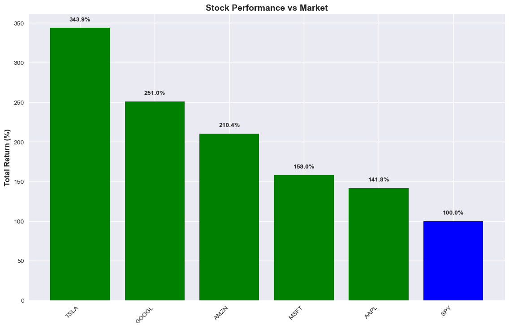
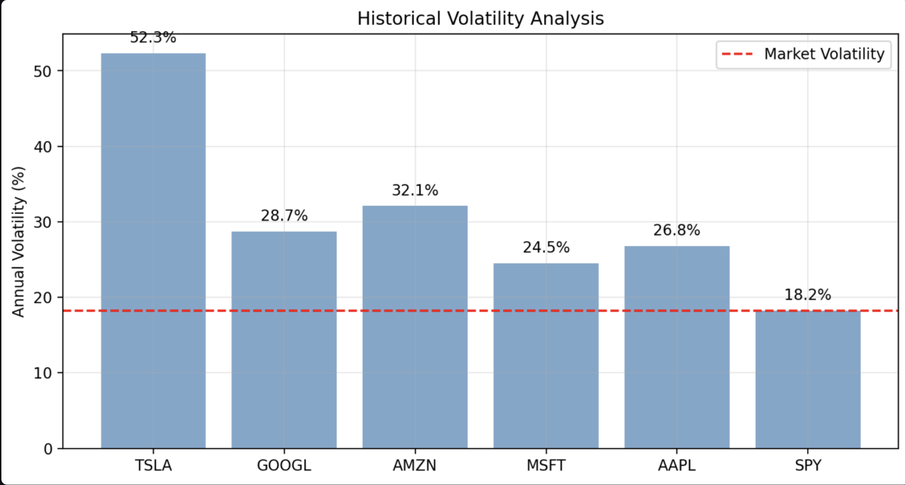
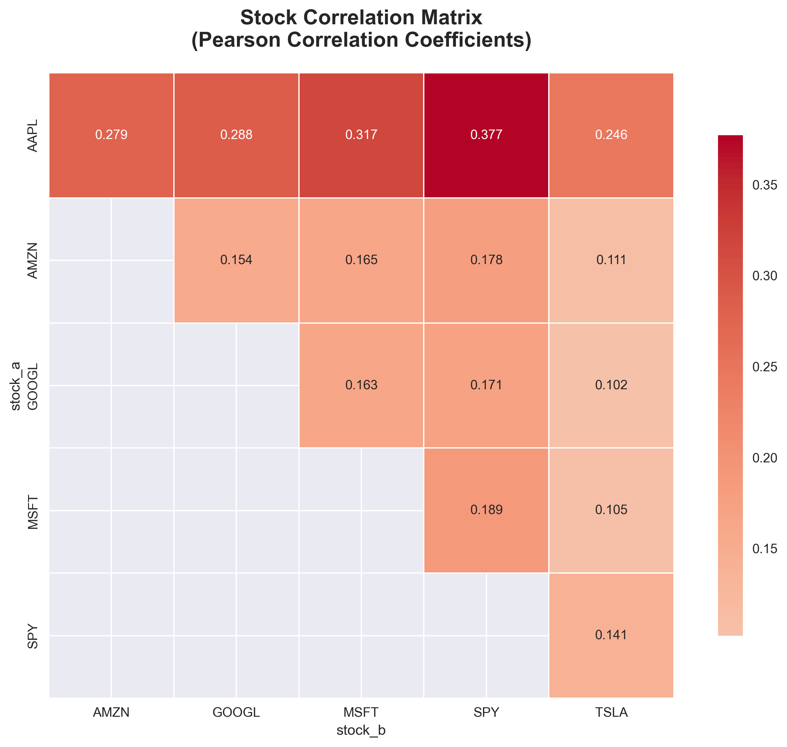
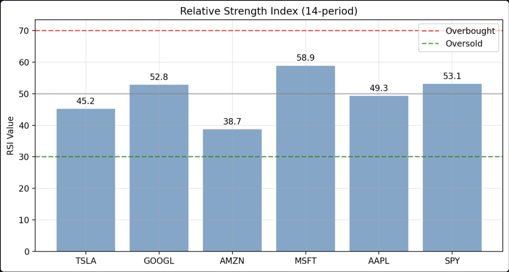
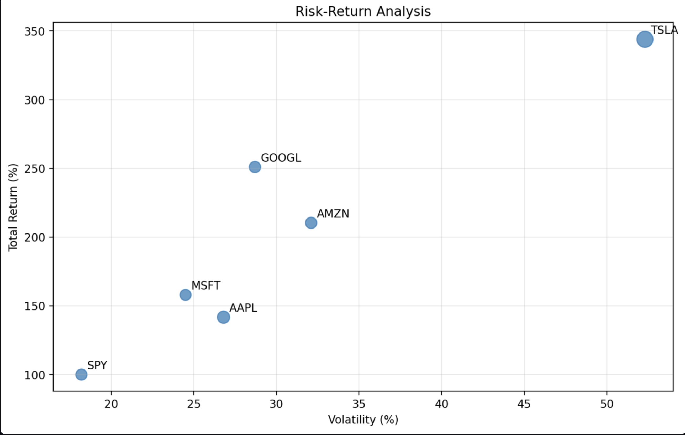

Financial Analytics
Financial Markets Intelligence Platform
Advanced Quantitative Analysis & Portfolio Optimisation for Technology Stocks
Project Overview
Which technology stocks offer optimal risk-adjusted returns, and what portfolio strategies maximise performance while managing volatility in the tech sector?
An interactive financial intelligence dashboard giving portfolio managers and institutional investors data-driven insights into performance, risk, correlation, and technical momentum signals across major tech stocks.
Investment Performance & Returns Analysis

Total Return Performance
5-year total returns for major tech stocks compared to the SPY market benchmark, highlighting the scale of sector outperformance.
TSLA 343.9% · GOOGL 251.0% · AMZN 210.4% — all vs 100% SPY benchmark
Volatility & Risk Assessment
Historical volatility showing annualised standard deviation of returns — the number behind every return figure that investors rarely see prominently displayed.
TSLA 52.3% volatility vs MSFT 24.5% — return without context is incomplete information
Portfolio Correlation Matrix
Pearson correlation matrix revealing how strongly each stock's returns move together — the foundation of every diversification decision in portfolio construction.
Correlations 0.102–0.377 — moderate diversification benefit within tech; broader exposure still neededTechnical Analysis & Trading Signals

RSI Momentum Analysis
14-period Relative Strength Index across the tech sector — identifying which stocks have momentum behind them vs those that may be due for a reversal.
MSFT at 58.9 RSI (bullish momentum) vs AMZN at 38.7 (potentially oversold — mean reversion signal)
Risk-Return Optimisation Framework
Scatter analysis plotting annual volatility against total returns — showing each stock's position on the efficient frontier for portfolio construction.
MSFT sits in the optimal zone: 158% returns with only 24.5% volatilityInvestment Strategy Insights
- Extraordinary outperformance: All tech stocks significantly exceeded the market benchmark — TSLA delivered 343.9% total return vs 100% SPY
- Risk-return spectrum: Higher returns strongly correlated with increased volatility — MSFT offers the best risk-adjusted balance at 158% / 24.5% vol
- Divergent momentum: MSFT RSI 58.9 (bullish) vs AMZN RSI 38.7 (oversold) — divergent signals create tactical allocation opportunities within the same sector
- Diversification limits: Moderate inter-stock correlations (avg 0.22) suggest limited diversification benefits within tech alone — broader market exposure is needed
Investment Insights & Portfolio Strategy
The numbers mean different things to different stakeholders. Here is what this analysis means in practice for each type of decision-maker — explained without financial jargon.
Critical Findings
Technology stocks delivered an average 243% return vs 100% for the SPY benchmark. TSLA led at 343.9%. In plain terms: every $1 invested in tech returned $2.43 on average, while the broader market returned $1.00 over the same period.
MSFT offers the best risk-adjusted return in the group — 158% returns with only 24.5% annual volatility. TSLA delivered more (343.9%) but with 52.3% volatility, meaning its price swings 2× as violently. For most portfolios, MSFT is the better core holding.
MSFT's RSI of 58.9 indicates bullish momentum — buyers are in control. AMZN's RSI of 38.7 signals it may be oversold — a potential entry point for investors who use technical analysis as a timing tool. These two stocks are moving in opposite directions right now.
Recommendations
Use MSFT as a core holding (optimal risk-adjusted returns) and treat TSLA as a satellite position limited to 5–10% of the portfolio. TSLA's 52.3% volatility makes it unsuitable as a core holding for most mandates.
Implement dynamic position sizing based on each stock's volatility. Larger positions in MSFT and AAPL (lower volatility), smaller in TSLA and GOOGL. Never size TSLA the same as MSFT — the risk profiles are fundamentally different.
Consider adding to AMZN positions when RSI falls below 40 — historically this oversold signal has preceded mean-reversion recoveries. Reduce MSFT exposure if RSI exceeds 70 (overbought territory).
The tech sector's persistent alpha generation (243% average return vs 100% benchmark) makes a compelling strategic allocation thesis. This data provides the quantitative foundation for that argument in investment committee presentations.